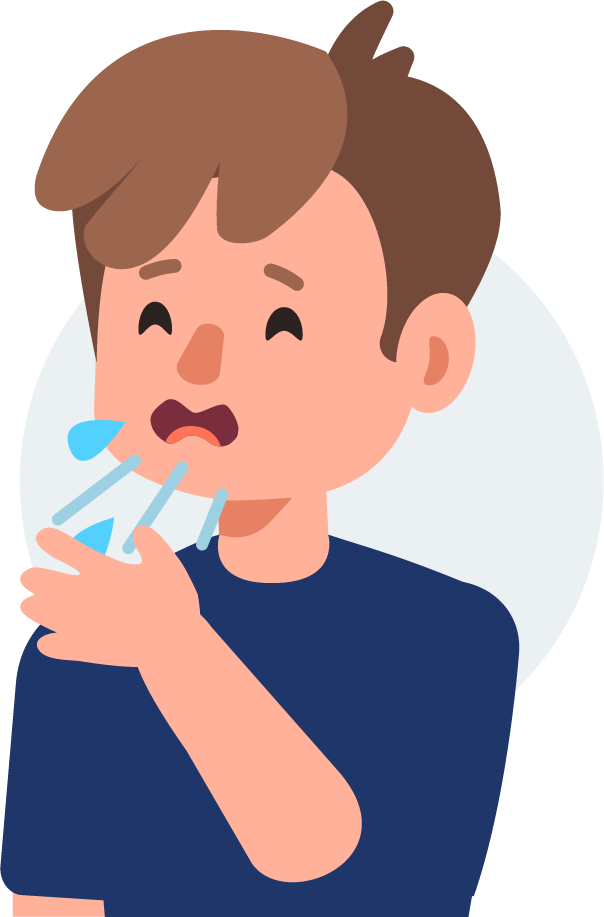
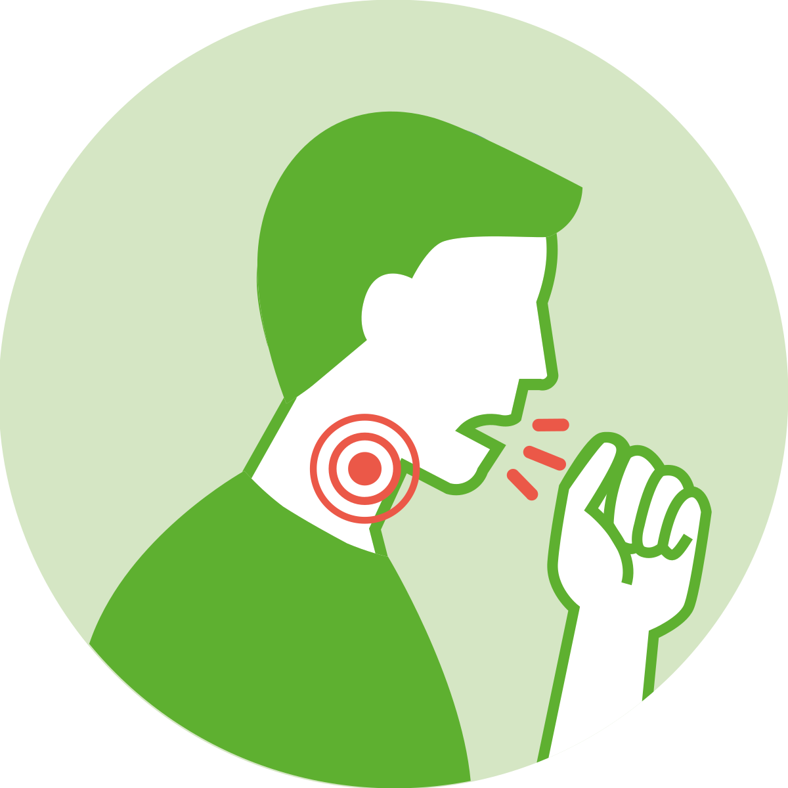
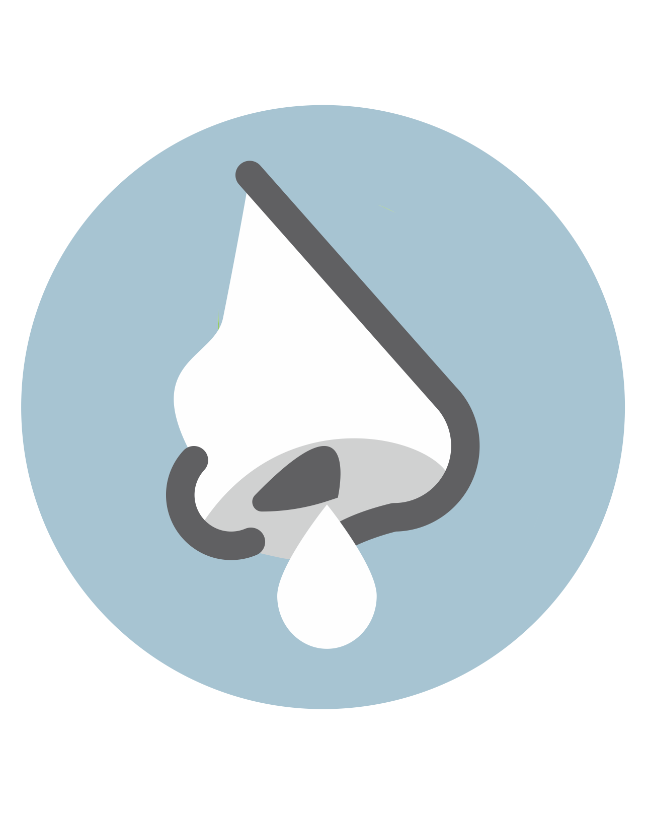
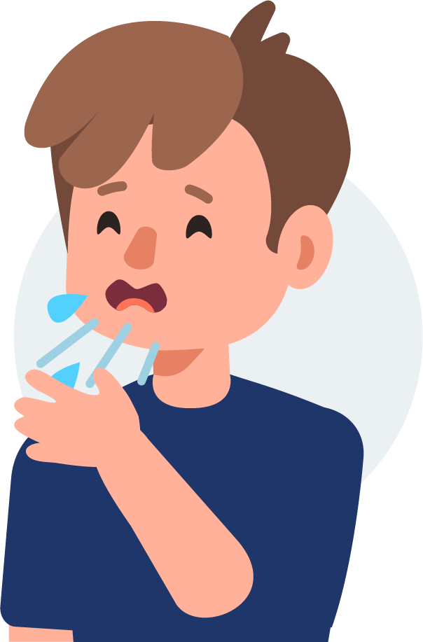
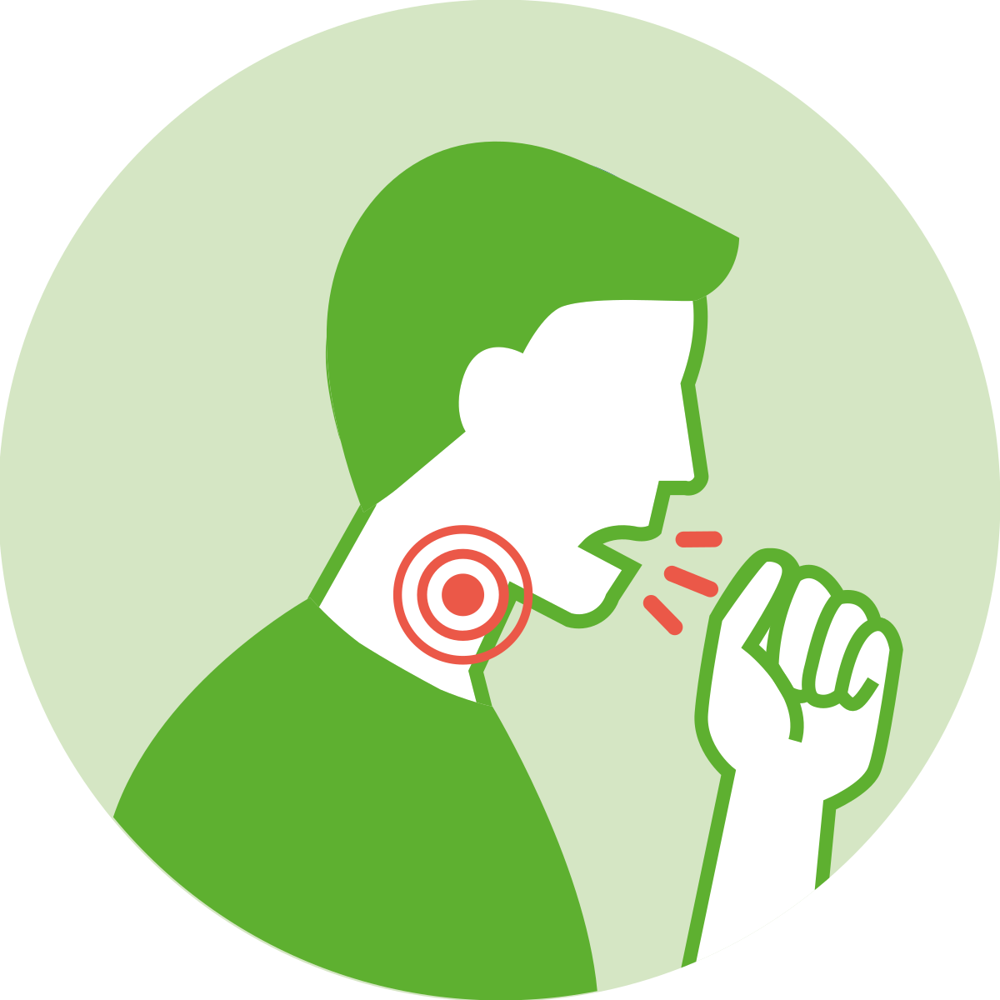
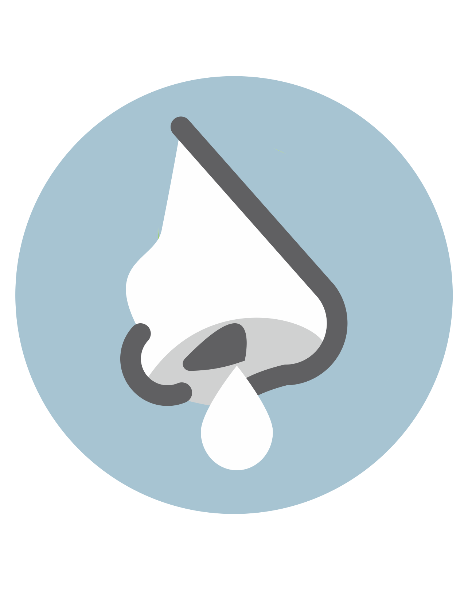

Gotículas de saliva
Espirro
Tosse
Catarro

Toque ou aperto de mãos
Objetos ou superfícies contaminadas
Lave as mãos com frequência, com água e sabão. Ou então higienize com álcool em gel 70%.
Ao tossir ou espirrar, cubra o nariz e a boca com o braço e não com as mãos.
Se estiver doente, evite contato físico com outras pessoas e fique em casa até melhorar.
Não compatilhe objetos de uso pessoal, como talheres, pratos e copos.
Evite aglomeração e ambientes fechados.
A transmissão acontece de uma pessoa doente para outra ou por contato próximo (2 metros ou menos), por meio de:
Gotículas de saliva
Espirro
Tosse
Catarro
Toque ou aperto de mãos
Objetos ou superfícies contaminadas
O coronavírus é similar a uma gripe. Geralmente é uma doença leve ou moderada, mas alguns casos podem agravar. Os sintomas mais comuns são:
Segue abaixo idéia que as empresas, escolas, hospitais, podem adotar para minimizar os riscos de contaminação: